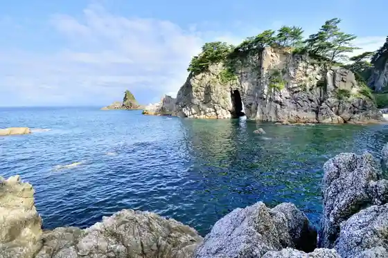
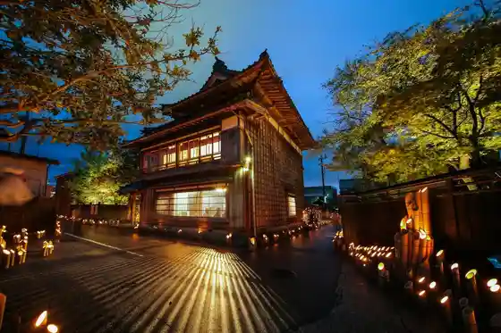
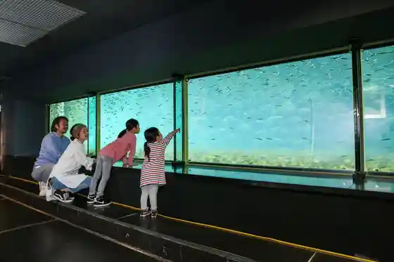
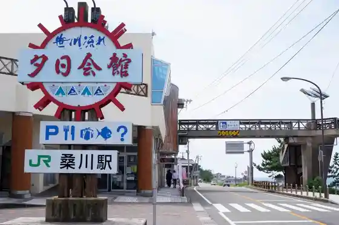

Sasagawa Nagare
Murakami, Niigata · 0254-77-3115 · Official / source link

Murakami Sho no Take Toro Festival
Murakami, Niigata · 0254-53-2258 · Official / source link

Iyoboya Hall
Murakami, Niigata · 0254-52-7117 · Official / source link

Castle Town Murakami Machiya no Byobu Festival
Murakami, Niigata · 0254-53-2258 · Official / source link
Roadside Station (Sasagawa Nagare) Yuhi Hall
Murakami, Niigata · 0254-79-2017 · Official / source link

Senami Onsen
Murakami, Niigata · 0254-52-2656 · Official / source link
Senami Onsen Beach
Murakami, Niigata · 0254-53-2111 · Official / source link
Castle Town Murakami Machiya no Ningyo Sama Meguri
Murakami, Niigata · 0254-53-2258 · Official / source link
Sennen Sake Kikkawa / Kikkawa
Murakami, Niigata · 0254-53-2213 · Official / source link
Iwafune Minato Sengyo Center
Murakami, Niigata · 0254-52-1261 · Official / source link
Sasagawa Nagare Yuransen
Murakami, Niigata · 0254-79-2154 · Official / source link
Murakami Taisai
Murakami, Niigata · 0254-53-2258 · Official / source link
Miyao Shuzo (Kabu) / (Shimeharitsuru)
Murakami, Niigata · 0254-52-5181 · Official / source link
Senami Onsen Yumoto Ryusen
Murakami, Niigata · 0254-52-5251 · Official / source link
Sennen Sake Izutsuya
Murakami, Niigata · 0254-53-7700 · Official / source link
Sasagawa Beach
Murakami, Niigata · 0254-77-3115 · Official / source link
Imagawa Campground
Murakami, Niigata · 0254-77-3115 · Official / source link
Echigo Murakami San no Maru Ryu Sake Shiobiki Ki Dojo
Murakami, Niigata · 0254-52-7117 · Official / source link
Asahi Mahoroba Onsen (Asahi Mahorobafureai Center)
Murakami, Niigata · 0254-72-6627 · Official / source link
Iwafune Minato Chokubai Tokoro
Murakami, Niigata · 0254-56-7107 · Official / source link
An Zen Koji Kurobei Tori
Murakami, Niigata · 0254-53-2258 · Official / source link
Murakami Ei Arakawa Gorufu Ba
Murakami, Niigata · 0254-62-1100 · Official / source link
Sasagawa Nagare Iwafune no Tennen Iwa Gaki
Murakami, Niigata · 0254-53-2258 · Official / source link
Roadside Station (Asahi (Asahi Midori Village)) (Kokudo 7 Go)
Murakami, Niigata · 0254-72-1551 · Official / source link
Murakami Castle Ruins
Murakami, Niigata · 0254-52-2003 · Official / source link
Sake no Sake Bitashi
Murakami, Niigata · 0254-53-2258 · Official / source link
Nishina Ya Haguro Shrine
Murakami, Niigata · 0254-52-3617 · Official / source link
Minamiodaira Damu Mizumi Park
Murakami, Niigata · 0254-66-6114 · Official / source link
Ishifune Shrine
Murakami, Niigata · 0254-56-7010 · Official / source link
Sasagawa Campground
Murakami, Niigata · 0254-77-3115 · Official / source link
Kuwagawa Beach
Murakami, Niigata · 0254-77-3115 · Official / source link
Goishi Beach
Murakami, Niigata · 0254-77-3115 · Official / source link
Shiobiki Ki Sake Aramaki Sake Sokubaikai
Murakami, Niigata · 0254-77-3141 · Official / source link
Taiyo Shuzo (Kabu) / (Taiyo Jo) Josetsutenji Ba (Nagomi Kura (Nagomigura))
Murakami, Niigata · 0254-53-3145 · Official / source link
Futako Shima Forest Park Oto Campground
Murakami, Niigata · 090-3478-5090 · Official / source link
Jomon Village Asahi Oku Sanmen Rekishi Koryu Kan
Murakami, Niigata · 0254-72-1577 · Official / source link
Samukawa Campground
Murakami, Niigata · 0254-77-3115 · Official / source link
I Yoru Nisshi Shrine
Murakami, Niigata · 0254-52-2656 · Official / source link
Sakan Kikkawa Kamon Tei De Joshitsu Na Teiitaimu
Murakami, Niigata · 0254-75-5711 · Official / source link
Itagai Beach
Murakami, Niigata · 0254-77-3115 · Official / source link
Itagai Campground
Murakami, Niigata · 0254-77-3115 · Official / source link
Murakami Local History Museum (Oshagiri Hall)
Murakami, Niigata · 0254-52-1347 · Official / source link
Iwafune Beach
Murakami, Niigata · 0254-53-2111 · Official / source link
Yuri Hana Onsen Koryu no Kan Hachiman
Murakami, Niigata · 0254-60-5050 · Official / source link
Goishi Campground
Murakami, Niigata · 0254-77-3115 · Official / source link
Senami Onsen Fun Yu Park
Murakami, Niigata · 0254-52-2656 · Official / source link
Arakawa
Murakami, Niigata · 0254-62-3101 · Official / source link
Gorudo Park Narumi (Narumi Kanayama)
Murakami, Niigata · 0254-72-6883 · Official / source link
Samukawa Beach
Murakami, Niigata · 0254-77-3115 · Official / source link
Morokami Tera Park
Murakami, Niigata · 0254-53-2111 · Official / source link
Jo Nen Tera
Murakami, Niigata · 0254-52-4524 · Official / source link
Toretate Yasai City Kamihayashi
Murakami, Niigata · 0254-66-8172 · Official / source link
Kashio Beach
Murakami, Niigata · 0254-53-2111 · Official / source link
Murakami Cha
Murakami, Niigata · 0254-53-2258 · Official / source link
Jubun Wakabayashi Ie House
Murakami, Niigata · 0254-52-7840 · Official / source link
Murakami Kibori Tsuishu
Murakami, Niigata · 0254-53-1745 · Official / source link
Murakami Domburi Kassen
Murakami, Niigata · 0254-53-2258 · Official / source link
Kannon Tera
Murakami, Niigata · 0254-52-4707 · Official / source link
Roadside Station (Kambayashi (Honami Village))
Murakami, Niigata · 0254-66-6326 · Official / source link
Imagawa Beach (Kama no Mae Ueyama)
Murakami, Niigata · 0254-77-3115 · Official / source link
Kuwagawa Campground
Murakami, Niigata · 0254-77-3115 · Official / source link
Charyo Kanei
Murakami, Niigata · 0254-52-2716 · Official / source link
Kyu Iwama Ie House
Murakami, Niigata · 0254-52-1347 · Official / source link
Taka Tsuboyama Taka Tsuboyama Tozanguchi
Murakami, Niigata · 0254-62-3101 · Official / source link
Nihonkoku Omata Yado Tozanguchi
Murakami, Niigata · 0254-77-3115 · Official / source link
Yama no Oishisa Gakko Shokudo (IRORI)
Murakami, Niigata · 0254-73-1291 · Official / source link
Ko Kumo Tera
Murakami, Niigata · 0254-53-0279 · Official / source link
Shincha no O Chatsumi Mi Experience
Murakami, Niigata · 0254-53-2258 · Official / source link
Matsukaze So
Murakami, Niigata · 0254-75-5276 · Official / source link
Roku Sai City
Murakami, Niigata · 0254-53-2111 · Official / source link
Morokami Tera
Murakami, Niigata · 0254-56-7019 · Official / source link
O Maku Ba Chakai
Murakami, Niigata · 0254-66-7408 · Official / source link
Kambayashi Suihen no Raku Ko
Murakami, Niigata · 0254-66-6111 · Official / source link
O Maku Ba Oike Park
Murakami, Niigata · 0254-66-6114 · Official / source link
Suzugataki
Murakami, Niigata · 0254-72-6883 · Official / source link
Fuji Moto Shrine
Murakami, Niigata · 0254-52-4781 · Official / source link
Maizuru Park
Murakami, Niigata · 0254-52-1347 · Official / source link
Kyo Ken Hachiman Shrine Shaso
Murakami, Niigata · 0254-77-3115 · Official / source link
Echigo Murakami Sake Shiobiki Ki Kaido
Murakami, Niigata · 0254-53-2258 · Official / source link
Fusai Tera
Murakami, Niigata · 0254-72-1974 · Official / source link
Castle Town Murakami Haru no Niwa Hyakkei Meguri
Murakami, Niigata · 0254-53-2258 · Official / source link
Dento Gyoho (Iguri Amiryo) (Iguriamiryo)
Murakami, Niigata · 0254-75-8943 · Official / source link
Oku Sanmen Damu Mizumi
Murakami, Niigata · 0254-52-7955 · Official / source link
Porasuta Kambayashi
Murakami, Niigata · 0254-66-6114 · Official / source link
Asahi Midori no Sato Nosambutsu Chokubai Shisetsu
Murakami, Niigata · 0254-72-1570 · Official / source link
Hokugen no Cha Some Experience
Murakami, Niigata · 0254-52-3570 · Official / source link
Murakami no Sake Ryori
Murakami, Niigata · 0254-53-2258 · Official / source link
Ohira Yama Minamiodaira Tozanguchi
Murakami, Niigata · 0254-66-6111 · Official / source link
Kichijo Shimizu (Kichijoshimizu)
Murakami, Niigata · 0254-77-3115 · Official / source link
Sanmen Damu Mizumi
Murakami, Niigata · 0254-52-7955 · Official / source link
Yama Kumada Gorge
Murakami, Niigata · 0254-77-3115 · Official / source link
Karei Yamashimizu (Kareizanshimizu)
Murakami, Niigata · 0254-77-3115 · Official / source link
Dewa Kaido
Murakami, Niigata · 0254-77-3115 · Official / source link
Senami Onsen no Omoide Ni !1 Ten Mono no O Suki Na Utsuwa Tsukuri Experience (1 Ko)
Murakami, Niigata · 090-7260-8793 · Official / source link
O Maku Ba Forest Park
Murakami, Niigata · 0254-66-6114 · Official / source link
Kyu Kasa Oka Ie House
Murakami, Niigata · 0254-52-1347 · Official / source link
Uetsu Shina Nuno
Murakami, Niigata · Official / source link
Asahi Supa Line Ensen no Genseirin
Murakami, Niigata · 0254-52-7959 · Official / source link
Aozora Nosan Ichigo Sono
Murakami, Niigata · 0254-75-5002 · Official / source link
Kyu Fujii Ie House
Murakami, Niigata · 0254-52-1347 · Official / source link
Shirukufurawa
Murakami, Niigata · 0254-72-0387 · Official / source link
Hirabayashi Castle Ruins
Murakami, Niigata · 0254-66-8111 · Official / source link
Yume Farm Arakawaichigo Sono
Murakami, Niigata · 0254-62-5338 · Official / source link
Yanagigarei
Murakami, Niigata · 025-244-6181 · Official / source link
Ito no Hososa Ni Bikkuri ! Korontokawaii Mayudama Kara Ito Wotsumugo
Murakami, Niigata · 0254-72-0387 · Official / source link
Sasagawa Nagare De Shiikayakku Experience
Murakami, Niigata · 080-8097-9035 · Official / source link
Omata Hakusan Jinja Uba Sugi
Murakami, Niigata · 0254-77-3115 · Official / source link
Kokuzo Green Park
Murakami, Niigata · 0254-72-6883 · Official / source link
Matsuo Basho Mo Arui Ta Dewa Kaido Sansaku
Murakami, Niigata · 0254-60-5050 · Official / source link